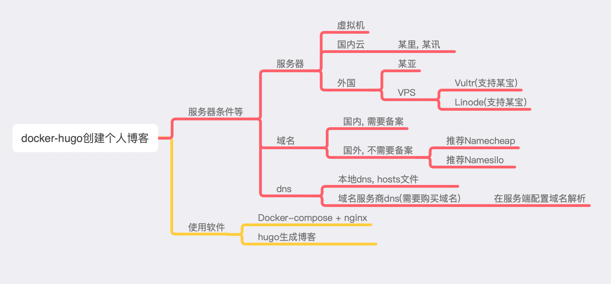

1. 方案选择, 需要内容结构.

1. 练习的话, 可以这种方案. 虚拟机+本地hosts, 免费, 只能内网访问.
2. 最难的方案, 国内域名(备案时间可能会很长,外地备案条件苛刻)+国内云.
2. 在服务器上拉取docker-compose仓库.
# 拉取仓库, 并存放在用户目录中
git clone https://github.com/Charles-one/docker-compose-repository.git ~/docker-compose-repository
# 复制这用到了docker-compose文件夹, 并存放在用户目录中
cp -r ~/docker-compose-repository/nginx-hugoBlog ~/nginx-hugoBlog
3. 使用hugo生成正确的博客目录
1. hugo生成网站目录
# 指定主题, 我使用了hugo-paper, 网站地址baseUrl, 目标目录, 我会上传多个平台, 所以指定下.
# 注意 --bashUrl后的/是必须要有的.
hugo --theme=hugo-paper --baseUrl="http://blog.actiger.com/" --destination="blog.actiger.com"
2. 上传步骤1生成的博客目录到github.com. 参考这里的步骤3和4
3. 在服务器上拉取上传的博客目录
# 进行docker-compose文件夹中
cd ~/nginx-hugoBlog
# 拉取的docker-compose 默认配置是 ./blog.actiger.com:/usr/share/nginx/html .
# docker-compose配置文件里的配置的目录, 与当前目录一致的.
# 克隆代码时需要, 重命名与docker-compose配置挂载目录名一致.
git clone https://github.com/Charles-one/blog.actiger.com blog.actiger.com
4. 运行docker-compose文件.
# 进行执行目录中
cd ~cd ~/nginx-hugoBlog
# 执行
docker-compose up -d